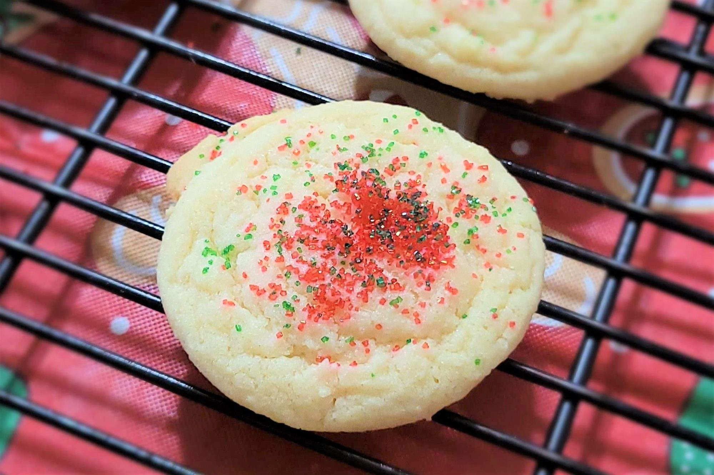

Sugar Cookies

Description
This sugar cookie recipe is simple and easy to make!
A perfect recipe for folks without obscure ingredients or enough time in the day.
Ingredients
- 2¾ cups all-purpose flour
- 1 teaspoon baking soda
- ½ teaspoon baking powder
- 1 cup butter, softened
- 1½ cups white sugar
- 1 egg
- 1 teaspoon vanilla extract
Steps
- Preheat oven to 375 degrees F (190 degrees C). In a small bowl, stir together flour, baking soda, and baking powder. Set aside.
- In a large bowl, cream together the butter and sugar until smooth. Beat in egg and vanilla. Gradually blend in the dry ingredients.
Roll rounded teaspoonfuls of dough into balls, and place onto ungreased cookie sheets.
- Bake 8 to 10 minutes in the preheated oven, or until golden. Let stand on cookie sheet two minutes before removing to cool on wire racks.